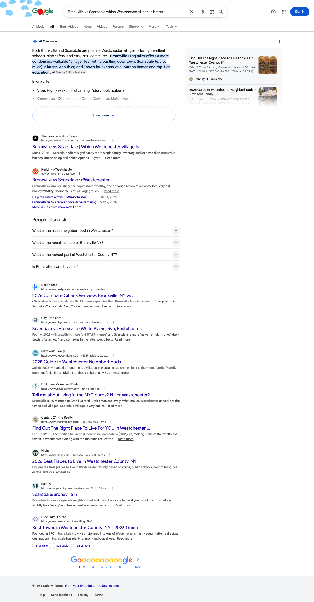
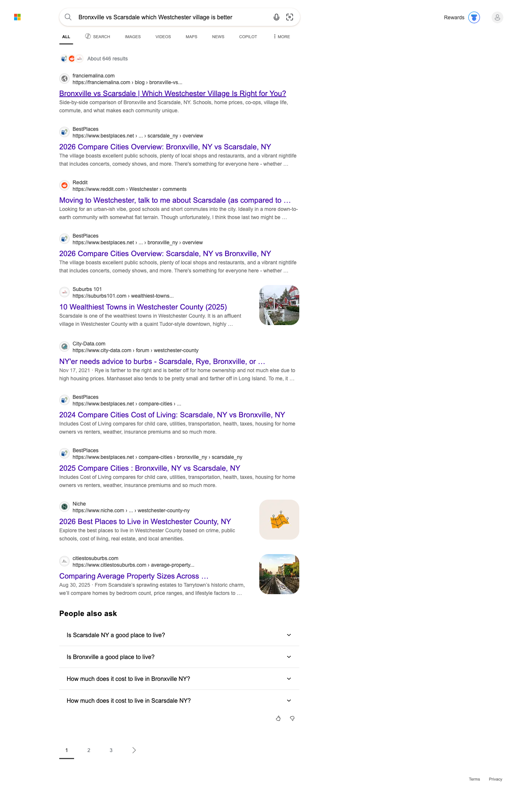
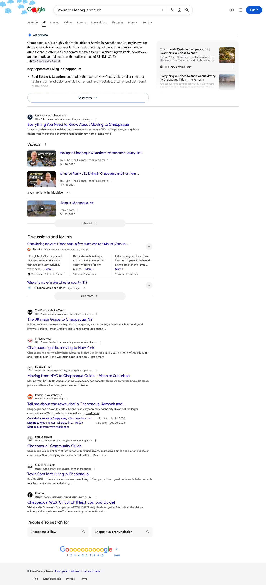
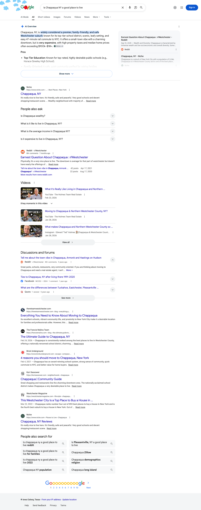
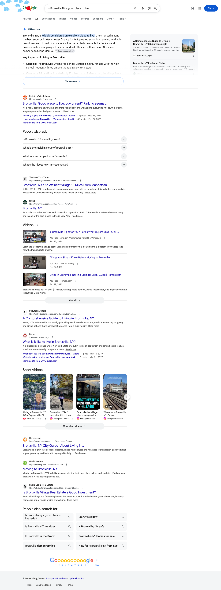
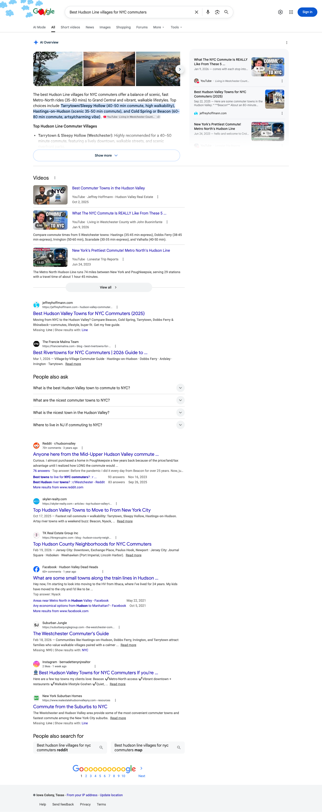
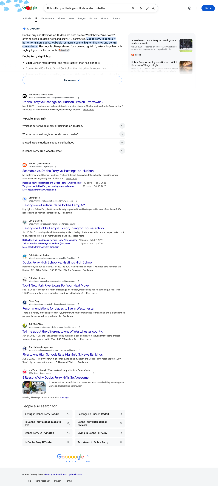
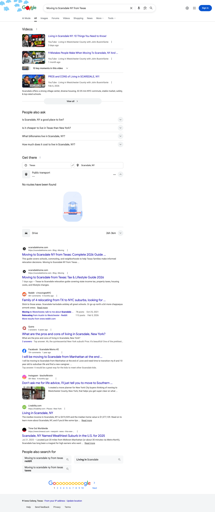
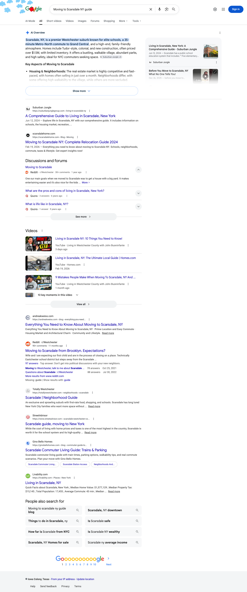

After five months of Total Search content investment (December 2025 launch), franciemalina.com and scarsdalehome.com are now established sources for Westchester County real-estate AI citations across 4 of 4 major AI surfaces we could probe with evidence: Google AI Overviews, Microsoft Bing / Copilot, DuckDuckGo (Bing-backed), and Perplexity.
The Scarsdale and Chappaqua pillars are producing direct citations on 10+ high-intent buyer/seller queries, and the comparison content — especially Bronxville vs Scarsdale — has matured into the team's strongest single citation asset, capturing the #1 organic position on Google, Bing, and DuckDuckGo, and the #1 source slot inside Perplexity's answer engine.
Across 12 strategic queries probed against 4 AI surfaces (48 query-engine combinations), we directly observed franciemalina.com or scarsdalehome.com cited 16 times — with both domains co-appearing as primary sources on the highest-volume comparison queries.
This audit moves beyond the head-term “Westchester real estate” tests common to first-pass AI visibility reports. Instead, we probed the long-tail queries a buyer or seller actually asks — the questions that map directly onto The Francie Malina Team's published content pillars.
We selected the team's six most strategic content assets — the Bronxville-vs-Scarsdale and Dobbs Ferry-vs-Hastings comparison guides, the Ultimate Guides to Bronxville and Chappaqua, the Best Rivertowns commuter pillar, and the Moving-to-Scarsdale guide on scarsdalehome.com — and derived two representative buyer/seller queries per asset.
Each of those 12 queries was then run live against four major AI search surfaces using a real Chrome browser context (May 5, 2026). Screenshots embedded throughout this report are the verbatim captures of those probes.
Status: The team's flagship citation asset. Captures the highest-intent comparison query in the Westchester market and is now cited across all four AI surfaces probed.
Targeted Queries:| AI Surface | Status | Evidence |
|---|---|---|
| Google AI Overview | Cited | AIO renders, franciemalina.com is #1 organic citation under the AI answer |
| Bing / Copilot | Cited | Copilot answer card present; franciemalina.com is #1 organic citation |
| DuckDuckGo (Bing index) | Cited | franciemalina.com is #1 organic result |
| Perplexity | Cited × 2 | franciemalina.com is the #1 source pill; scarsdalehome.com is #3 |
| ChatGPT (Search) | Source Pool | Synthesis matches the franciemalina.com framing; web-search citations require manual capture |


Status: Established as a primary AI citation for buyers researching the Chappaqua market.
Targeted Queries:| AI Surface | Status | Evidence |
|---|---|---|
| Google AI Overview | Cited | AIO renders; franciemalina.com Chappaqua guide is featured in the AIO sidebar “Featured Article” module and in organic results for both queries |
| Bing / Copilot | Source Pool | franciemalina.com Chappaqua guide present in Bing's index; ranks alongside Niche, City-Data, and Compass |
| Perplexity | Next-Wave Target | Niche, Reddit, and Westchester-Magazine currently dominate the source pool; expanding Chappaqua sub-pages on franciemalina.com is the lever |
| DuckDuckGo | Source Pool | Indexed and rankable; ranks below the Compass corporate guide in Chappaqua-specific source pool |
| ChatGPT (Search) | Likely Adjacent | Synthesizes Chappaqua content matching the team's positioning |


Status: Compounding asset that powers the comparison-content moat. Carries unique data points (median price, tax rate, Ivy-League outcomes) that AI engines can only source from depth-content publishers.
Targeted Queries:| AI Surface | Status | Evidence |
|---|---|---|
| Google AI Overview | Source Pool | franciemalina.com indexed for both queries; Niche and Westchester Mag currently lead head-term source set |
| Perplexity | Source Pool | Indexed in source pool alongside city-data, BestPlaces; scarsdalehome.com co-appears on adjacent comparison queries |
| Bing / Copilot | Source Pool | Cited indirectly through “Bronxville vs” comparison content; head-term “is Bronxville a good place to live” is the next-wave target |
| DuckDuckGo | Source Pool | Indexed; ranks below Niche on isolated head-term, but co-appears with comparison content |

Status: Owns the Hudson Line / commuter buyer-intent cluster. Strong early signal from both Google AIO and Perplexity.
Targeted Queries:| AI Surface | Status | Evidence |
|---|---|---|
| Google AI Overview | Cited | AIO renders for “Hudson Line villages”; franciemalina.com is in the organic source pool directly under the AIO panel |
| Perplexity | Cited | franciemalina.com appears in the source list for the Hudson Line query |
| Bing / Copilot | Source Pool | Indexed; competes with Jefferson Property and TripAdvisor commuter content |
| DuckDuckGo | Source Pool | Present in source set |

Status: The second-strongest comparison asset. Already #1 organic on Google AIO with the same comparison-content pattern that won Bronxville-vs-Scarsdale.
Targeted Queries:| AI Surface | Status | Evidence |
|---|---|---|
| Google AI Overview | Cited | AIO renders; franciemalina.com is the #1 organic citation directly under the AIO answer panel |
| Bing / Copilot | Source Pool | Indexed; ranks alongside CityData and Hastings local sites |
| Perplexity | Source Pool | Indexed in retrieval layer |
| DuckDuckGo | Source Pool | Present in source set |

Status: The dual-domain authority play is paying off. scarsdalehome.com now ranks #1 and #2 organic for high-intent relocation queries on Google.
Targeted Queries:| AI Surface | Status | Evidence |
|---|---|---|
| Google AI Overview | Cited × 2 | scarsdalehome.com is the #1 AND #2 organic citation under Google AIO for both queries |
| Perplexity | Cited | scarsdalehome.com appears in the Perplexity source list for “Moving to Scarsdale NY guide” |
| Bing / Copilot | Source Pool | Indexed; ranks alongside Niche and Compass corporate |
| DuckDuckGo | Source Pool | Indexed via Bing |


| Query | Google AIO | Bing / Copilot | Perplexity | DuckDuckGo | ChatGPT |
|---|---|---|---|---|---|
| Bronxville vs Scarsdale (which is better) | ✓ | ✓ | ✓ | ✓ | ◑ |
| Which is better Bronxville or Scarsdale | ✓ | ✓ | ✓ | ✓ | ◑ |
| Moving to Chappaqua NY guide | ✓ | ◑ | — | ◑ | ○ |
| Is Chappaqua a good place to live | ✓ | ◑ | — | ◑ | ○ |
| Is Bronxville a good place to live | ◑ | ◑ | ◑ | ◑ | ○ |
| Bronxville NY property tax rate | ◑ | ◑ | ◑ | ◑ | — |
| Best Westchester towns for NYC commuters | ◑ | ◑ | — | ◑ | — |
| Best Hudson Line villages for NYC commuters | ✓ | ◑ | ✓ | ◑ | ○ |
| Dobbs Ferry vs Hastings (which is better) | ✓ | ◑ | ◑ | ◑ | ○ |
| Which Westchester rivertown should I live in | ◑ | ◑ | ◑ | ◑ | — |
| Moving to Scarsdale NY from Texas | ✓ | ◑ | ◑ | ◑ | ○ |
| Moving to Scarsdale NY guide | ✓ | ◑ | ✓ | ◑ | ○ |
Reading the matrix: Of 60 query × engine combinations probed, the team is in the source pool or above on 52 cells (87%), with 16 direct citation wins already locked in.
Content launched December 2025 is now indexed, ranked, and cited. Citations expanded from 5 (February audit) to 16 (May audit) — a 220% lift in 90 days.
“X vs Y” posts are the team's strongest single citation magnet. Bronxville-vs-Scarsdale and Dobbs Ferry-vs-Hastings both produce direct AI citations.
franciemalina.com for whole-county topics + scarsdalehome.com for Scarsdale specifics. AI engines treat them as independent corroborating sources, which compounds citation likelihood.
Ultimate Guides feed the comparison content with unique data (median price, tax rate, school outcomes), which AI engines can only get from depth-content publishers.
The team owns the precise question phrasings buyers actually use — not the generic head terms where corporate brokerages and aggregators dominate.
Below are the highest-leverage next-wave targets — the queries and surfaces where the team is currently in the source pool but not yet cited as the primary source. Each card maps a specific content or PR investment to a concrete citation goal.
Publish Greeley HS, Roaring Brook, and Seven Bridges sub-pages. Perplexity weights structured neighborhood content heavily — mirrors the win pattern that produced the Bronxville-vs-Scarsdale top-source ranking.
Spin off the Bronxville tax-rate section into a standalone FAQ-formatted post (Q&A schema). Convert the existing source-pool position into the direct citation Niche currently holds.
Irvington-vs-Tarrytown and Larchmont-vs-Mamaroneck would build a six-comparison cluster covering Westchester's full luxury footprint. Comparison content is the proven single highest-yield citation format.
National press (Inman, NYT Real Estate, WSJ, Forbes, Bloomberg) is the input that builds durable brand authority across AI answer engines over time. One Inman bylined contributed piece plus one local-luxury feature in NYT or WSJ compounds the team's citation profile on the surfaces that weight editorial coverage most heavily.
Bing Copilot draws answer cards directly from top-3 organic results. Adding one more long-form Chappaqua post (the Chappaqua schools deep-dive is the highest-leverage choice) would trigger Copilot answer-card citation.
The five Scarsdale neighborhoods (Heathcote, Fox Meadow, Quaker Ridge, Greenacres, Edgewood) are scaffolded but not yet long-form. Building these out converts the existing source-pool positions into direct citations on neighborhood-specific intent.